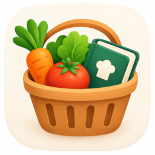

Politique de confidentialité
En résumé : Menu & Groceries ne collecte aucune donnée personnelle. Vos recettes, votre planning, votre liste de courses et votre garde-manger restent sur vos appareils et dans votre propre compte iCloud. Le développeur n'y a pas accès.
Données que vous saisissez
Les recettes, photos, plannings, listes de courses, magasins, articles et produits du garde-manger que vous créez sont enregistrés sur votre appareil. Ils sont synchronisés entre vos appareils par iCloud, dans la base de données privée de votre compte Apple. Ces données sont gérées par Apple selon sa politique de confidentialité. Le développeur n'exploite aucun serveur et ne peut pas les lire.
Liste de courses partagée
Si vous choisissez de partager votre liste de courses, son contenu est partagé par iCloud avec les seules personnes que vous invitez. Vous pouvez arrêter le partage à tout moment depuis l'app.
Import de recettes
Quand vous importez une recette depuis un lien, l'app télécharge directement la page de ce site pour en lire la recette. Le site visité peut voir cette requête comme pour toute visite web. Le lien n'est envoyé à aucun autre service. L'adresse de la page est conservée avec la recette pour que vous puissiez y revenir.
L'import depuis une photo utilise la reconnaissance de texte d'Apple, sur votre appareil. La photo n'est envoyée nulle part.
Achats
L'achat de Premium est traité par l'App Store. Le développeur ne reçoit ni vos coordonnées ni vos informations de paiement.
Notifications
Les rappels (minuteurs de cuisson, produits bientôt périmés) sont des notifications locales, programmées sur votre appareil.
Suivi et publicité
L'app ne contient ni publicité, ni outil de mesure d'audience, ni traceur, et ne partage aucune donnée avec des tiers.
Supprimer vos données
Supprimer une recette ou un élément dans l'app le supprime aussi d'iCloud. Pour tout effacer, supprimez l'app puis ses données iCloud dans Réglages › [votre nom] › iCloud › Gérer le stockage.
Contact
Pour toute question sur cette politique : VOTRE-EMAIL@exemple.com